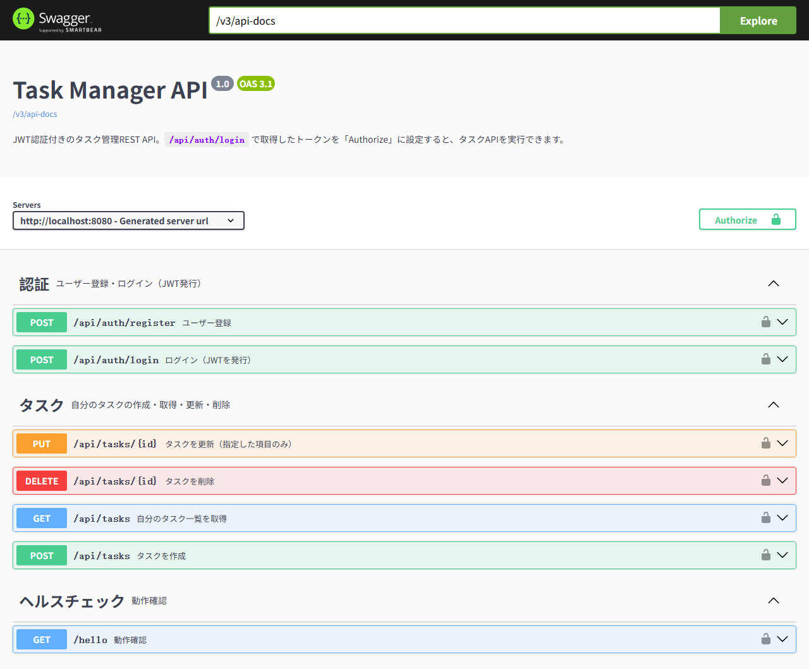
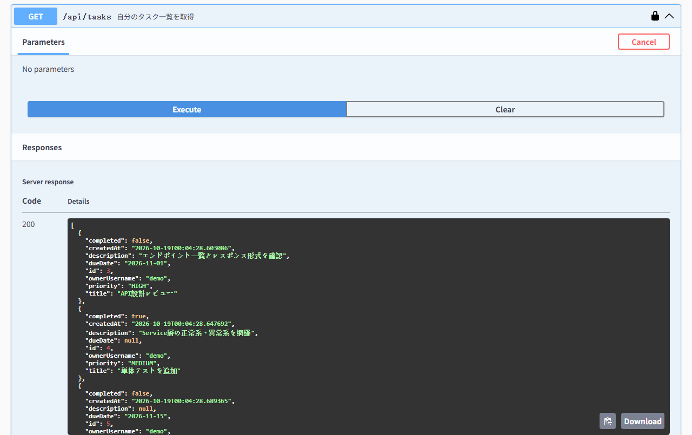
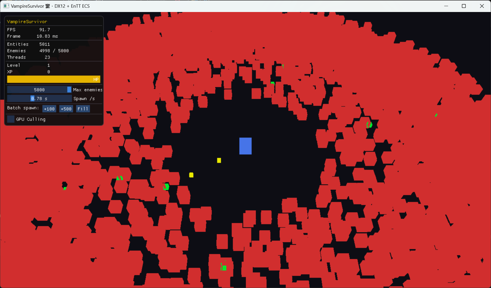

/* 02 — work */
function projects() {
// 01 — backend
Task Manager API
Java · Spring Boot · JWT Auth · MySQL · Docker Compose

// Swagger UI — エンドポイント一覧
// JWT認証後の実行結果（200 OK）Spring BootとMySQLで構築したタスク管理REST API。JWTによるステートレス認証を実装し、ユーザーは自分のタスクのみを作成・閲覧・更新・削除できます。Docker Composeによりアプリとデータベースをコマンド1つで起動でき、Swagger UIからブラウザ上でAPIを試せます。C++の経験をベースに、Spring Bootをゼロから学んで開発しました。
- JWT + Spring Securityによるステートレス認証、BCryptでパスワードをハッシュ化
- ユーザーごとのデータ分離：所有者条件付きクエリで他人のタスクを操作不可
- 他人のタスクには404を返し、存在の有無を推測させない設計
- Controller / Service / Repository のレイヤード構成、EntityとDTOの分離
- Bean Validationによる入力チェック、原因に応じたHTTPステータス（400 / 401 / 404 / 405）
- @RestControllerAdvice による統一JSONエラーレスポンス
- JUnit 5 + Mockito の単体テスト、H2でDBなしでもテスト実行可能
- Dockerマルチステージビルド + MySQLヘルスチェック、秘密情報は .env で管理
- Swagger UI（OpenAPI）でJWT認証付きAPIをブラウザから実行可能
// 02
D3D12HelloOcean
DirectX 12 · JONSWAP FFT Ocean · Full Post-Processing Pipeline · PBR Ship

// 海洋・天気システム

// PBR 船体レンダリング
DirectX 12とC++20で構築したリアルタイム海洋レンダラー。JONSWAPスペクトルベースのGPU FFTによる無限海面シミュレーション、体積雲レイマーチング、フルポストプロセスパイプラインを実装。GLTFランタイムローダーによるPBR船体（Cook-Torrance GGX）とバネ-ダンパー浮力物理も含む。
- JONSWAP Spectrum + Radix-2 IFFT（GPU 3パスCS）
- 無限タイル海面 9×9 / 400m、2レベルLOD、視錐台カリング
- FFT変位 + 4 Gerstner波ハイブリッド
- 体積雲レイマーチング（半解像度 8×高速化、グラジェントノイズ）
- 雲影：海面へのレイマーチ太陽方向シャドウ
- 水面：Beer-Lambert吸収・Snell窓・SSS・Fresnel・SSR
- TAA · Bloom · God Rays · DOF · SSAO · ACES トーンマッピング
- GLTFランタイムローダー + PBR船体（ARM テクスチャ対応）
- バネ-ダンパー船体傾斜物理（GPU FFT高さ読み戻し、1フレーム遅延）
- 天候システム (Calm/Windy/Storm/Tsunami) スムーズ補間
- Boidsフロッキング魚群 + GPU インスタンシング
- IBL：天空Cubemap + SH9拡散照度 + GGXプリフィルタースペキュラー
- 物理ベース虹（主虹42° / 副虹52°、大気湿度蓄積モデル）
- 雨パーティクル + 水面波紋CB + プロシージャル雷
- 浮遊オブジェクト + 水中オブジェクト（PBR・ガラス屈折）
// 03
DX12 ECS — Vampire Survivors Demo
DirectX 12 · EnTT ECS · Thread Pool · GPU Frustum Culling

EnTT ECS・マルチスレッド・DirectX 12描画パフォーマンスを研究するための自主プロジェクト。Vampire Survivors形式のデモを通じて、データ指向アーキテクチャ・並列ジョブシステム・GPU側カリングを実装。
- EnTT ECS：キャッシュフレンドリーなコンポーネントレイアウト
- スレッドプール：128エンティティ単位で敵AIを並列ディスパッチ
- GPUフラスタムカリング：CSで全インスタンスを判定 + InterlockedAdd
- ExecuteIndirect：CPUリードバックなしでGPUが描画引数を生成
- 単一DrawIndexedInstanced呼び出しで全エンティティを描画
- ImGui：FPS・エンティティ数・スレッド数・GPUカリング切替
// その他の作品
}